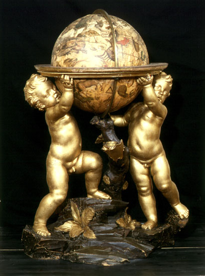

Hall of Globes
Hall of Globes
Pisa, 1571
Giulio di Cesare Petrucci (a.1571)
parchment
93 x 62 cm
A list dated 10 March 1744 describing some "Furniture taken from the Museo Cospiano and placed in the Geographic and Nautical Room in the Institute of Science" shows how this map and another by Banet Panadès [file 64] come from the collection of the marquis Ferdinando Cospi, donated to the Bolognese Senate in 1660 and transferred around 1740 to the Institute of Science on the orders of Benedict XIV (Prospero Lambertini). Restored in 1969, it charts the whole Mediterranean basin. It stretches from the Black Sea, with the Crimea peninsula, in the east to the part of the Atlantic Ocean facing Europe and Africa in the west. In the north the coasts map out Denmark and a piece of Scandinavia, as far as the Orkney Islands. To the south the map ends in Africa with the Rio de S. Giouanni and the Atlas mountain chain. The languages used are Italian and Latin and the different colorings represent different geographical features: rivers in green; mountains in brown, red, green and violet; lakes in blue; towns in black or red, depending on their importance. In the Red Sea (Mare Rubrum) the parting of the waters can be seen marking the passage of the Hebrews. Many cities are indicated by castles and flags with coat-of-arms. The perspective maps of Genoa, Venice and Jerusalem are rich in detail. The kingdoms are represented by the sovereigns sitting on their thrones or the sultans sat on sumptuous cushions.
The inscription reads:
Hoc Opus Fecit Julius Cesaris Petrucij Civis Senar
In Civitate Pisar~. Anno Dni M.D.LXXI.
On the neck of the skin, near the inscription, are some colored miniatures of a religious nature (Christ on the cross, the Madonna, the Magdalen and St John). Along the northern and southern edges of the map are two graduated scales. There is also a hole through which the string was threaded when the parchment was rolled up on its wooden cylinder. Seventeen compass cards are drawn, one of which is between Sicily and Sardegna. The scale is approximately 1:6 300 000 For a full and detailed description of the map see Frabetti (1978).
Palermo, 1556
Banet Panadès (a.1556)
parchment
100 x 66 cm
Like that of Giulio Petrucci, this parchment also probably comes from the Cospi collection. The map charts the whole of the Mediterranean basin, including the Black Sea with the Crimea Peninsula and the Sea of Azov, and a part of the Atlantic Ocean facing Europe and Africa. It has the same features as the map of Giulio Petrucci while the inscription reads:
Banet panades mallorqui in pallermo añy 1556
On the neck of the parchment there are three religious figures, the middle one of which is the Madonna kneeling with the Baby in her arms. On the map of Banet Panadès too there are numerous compass cards with relative loxodromic lines and four graduated scales, two along the northern edge, two along the southern.

Pechino, 1602
Matteo Ricci (Macerata 1552 – Pechino 1610)
printed rice paper
two panels 180 x 70 cm
The map is called: Carta Geografica Completa di tutti i Regni del Mondo. It was drawn up in 1602 at Peking by the Macerata born Matteo Ricci (1552-1610), Jesuit father founder of the Catholic mission in China. We read in Pasquale D’Elia - sinologist at the University of Rome who in 1958 certified the authenticity of the Chinese maps in this museum’s possession (see op. cit.) - that "it is the third edition of a geographical and cartographical work that made him famous throughout China. [Ricci] had already made a first edition in 1584 at Shiuhing, followed by a second in 1600 at Nanking, and two years later a third in Peking, where he had finally arrived on 24 January 1601." There are only a few exemplars of these maps in the world. Of the third edition of 1602, printed on rice paper, only another six exemplars are known of: two at the Vatican Library, three at libraries and national archives in Japan (Tokyo, Miyagi and Kyoto), one in a private collection (Schiller). Six other exemplars of subsequent versions of Matteo Ricci’s map can be found in Korea, China, London and Vienna and one was recently discovered in the store-rooms of the Shenyang Museum in China. A world search is currently in progress by Kendall Whaling Museum of Massachusetts.
The Bologna Specola is only in possessesion of the two outer sections - of the total six which made up the complete map, 4.14 m long - which show the coasts of Brazil on one side and those of Africa with Spain, France and Ireland on the other. During restoration a few decades ago a central fragment, that is part of the Doppio Emisfero delle Stelle by the German mathematician and astronomer Johann Adam Schall von Bell [file 66], was wrongly inserted between the two sections. In 1938, edited by the Biblioteca Apostolica Vaticana, an exhaustive work by Pasquale d’Elia was published with comments, notes and translation of the whole map. This and the other celestial map are of great importance for the evidence they offer on the development of map-making in the XVI and XVIIth centuries and the influence of Western thought in China in that same period. The maps carry plentiful instructions for use and detailed illustrations of the instruments that went into their production, as well as explanations regarding conceptions of "systems of the terrestrial and celestial world". There is a long preface by Matteo Ricci in the middle of the map, in the Pacific Ocean, which in P. D’Elia’s translation reads:
tion reads: "Once I thought learning was a multifold experience and I would not refuse to travel [even] ten thousand Li to be able to question wise men and visit celebrated countries. But how long is a man’s life? It is certain that many years are needed to acquire a complete science, based on a vast number of observations: and that’s where one becomes old without the time to make use of this science. Is this not a painful thing?
And this is why I put great store by [geographical] maps and history: history for fixing [these observations], and maps for handing them on [to future generations].
…
Respect fully written by the European Matteo Ricci on 17 August, 1602."
To the left of the title the figure of the Nove Cieli (Nine Skies) can be made out, illustrated as per XVIth-century conceptions, and the accompanying inscription explains the movement of the planets. Some other inscriptions in the right-hand section, on the other hand, offer general ideas on geography and oceanography. Another inscription records an extract of the Storia dei Mongoli regarding the motions of the Sun. In the left-hand section, at the top, there is an explanation of eclipses and the method for measuring the Earth and the Moon. Both sections carry the characteristic seal IHS of the Compagnia di Gesù, while at bottom left, in the southern hemisphere, one can see the name of the Chinese man who did the printing and the date: "one day of the first month of autumn in the year 1602".
Nothing is known about where this relic came from. One hypothesis is that it reached Bologna via the Jesuit Giovan Battista Riccioli (1598-1671), professor of humanities, philosophy, theology and astronomy, first at Parma, then Bologna: his works do in fact speak of Matteo Ricci and Chinese astronomy. For a detailed description and bibliography of the map see the works of father Pasquale D’Elia (op. cit.).
Peking, 1634
Johann Adam Schall von Bell (Costanza 1592- ? 1666)
printed rice paper
four panels c.180 x 60 cm
Since 1595 the Jesuit father Matteo Ricci - founder of the Catholic mission in China - had asked his superiors in Rome for an astronomer to help correct and update the Chinese calendar, demonstrating in this way the superiority of the western (and hence Catholic) culture to the Chinese. The request was repeated in 1605 and 1608 but, Ricci was to die in 1610 without seeing it acted upon. His successor in China, Nicola Longobardo, however managed to solicit the Pope who in 1619 sent 22 missionaries to China, among them several mathematicians. Among these was Johann Adam Schall von Bell of Costanza - Roman student of the Collegio Germanico and auditor of the lessons given by Galileo in Rome at the Collegio Romano - who brought with him the first telescope to arrive in China. After predicting the solar eclipse of 21 June 1629 much more accurately than the Chinese and Mohammedan astronomers of the court had, Von Bell was appointed by the Emperor to see to the correction of the calendar, a work he undertook with the Milanese Giacomo Rho and with the epistolary assistance of Kepler: the help of Galileo, repeatedly requested, was refused. Von Bell produced a great deal of scientific work in China in this period, including this large eight-panneled cartographic work whose general title is Two general maps of the stars to the north and south of the equator. Two exemplars can be found at the Vatican Library, one of which (mss. Barberini Orient. 149) was made for mounting on a screen for the Private Council of the Emperor and is in magnificent and bright colors, with gilded stars.
The Museo della Specola has only four panels. Three of these illustrate the northern hemisphere, with the north Pole at the centre, the Milky Way and stars visible to the naked eye. The observations for the making of the map were done in Peking with the help of Chinese astronomers and the telescope, proof of the modernity of Von Bell’s work. The star coordinates are from the year 1628. One inscription shows the symbols of the six magnitudes of the stars and nebulae. The fourth segment - wrongly inserted a few decades ago in the geographical map of Matteo Ricci [file 65] - includes the presentation of the work, written by the Chinese Paolo Siûcoamcchi (Hsû Kuang-ch’i), collaborator of von Bell. Illustrated, from the top down, are the maps of the oppositions and conjunctions of Jupiter, Mars and Venus, separated by two observational instruments - a theodolite and an azimuthal instrument - whose use is illustrated at the side, in the inscription. The maps were executed by a high official at the "Office of Astronomy", collaborator of von Bell, Wu Ming-chu. Nothing is known about the origin of these relics. One hypothesis is that it reached Bologna via the Jesuit Giovan Battista Riccioli (1598-1671), professor of humanities, philosophy, theology and astronomy, first at Parma, then Bologna: his works do in fact speak of Matteo Ricci and Chinese astronomy. For a detailed description and bibliography of the map see the work of father Pasquale D’Elia, published in Coelum in 1958; for a biography of Schall von Bell see Väth (1933) and the 1992 International Symposium to him dedicated.


Noremberg, late XVII cen.
Maria Clara Eimmart (Nuremberg 1676-1707)
blue cardboard with black poplar frame
64 x 52 cm
“Tabulae XII. Chartacee ceruleo colore inductae, quibus caelestium corporum quorumdam Phases a Maria Clara Eimmart depictae sunt.”
This is what the Marsili donation has to say about these illustrations of celestial phenomena painted in pastel on blue cardboard by the daughter of Georg Christoph Eimmart (Regensburg 1638 - Nuremberg 1705), painter, sculptor as well as keen amateur astronomer (she would leave fifty-seven manuscript volumes). A convicted Copernican, Eimmart had built in Nuremberg, where he was director of the Malerakademie (academy of painting), a private observatory quite well known at its time and was in touch with Count Marsili to whom he sent some copper engravings of the Danube-lands for his Danubius pannonico-mysicus... (see Observatio Dn. Georgii Christophori Eimmarti, in Miscellanea curiosa medico-physica Academiae Naturae curiosorum Dec. II, Nürnberg 1690). Maria Clara - married to a student of Eimmart and teacher of Physics, Johann Heinrich Müller (1671-1731) - had, under the guidance of her father, cultivated drawing, painting, sculpture and engraving. She did a large number of drawings of flowers and birds and, to help her father with his observations, of astronomical subjects too. From 1693 to 1698 she did drawings on blue paper for about 350 lunar phases observed by telescope. She died at the early age of 31, giving birth to a son. Only 10 of the 12 tables donated by the father to Marsili remain at the Museo della Specola, bearing witness to the drawing and keen observational skills of Maria Clara Eimmart:
several examples of the appearance of comets
drawings of a paraselene and a parhelion (haloes around the Moon and Sun caused by reflections and refractions in the atmosphere)
full moon
lunar phase observed on 23 April 1693
lunar phase observed on 29 August 1697
phases of Mercury, according to the observations of Johannes Hevelius, of 1694, 1695 and 1696
phases of Venus
aspect of Mars, according to the observations of various astronomers
aspect of Jupiter, according to the observations of various astronomers
aspect of Saturn, with view of the rings as they appeared in observations of the time.
Another three tables (of the six recorded in the 1843 inventory) have also been refound, smaller and on brown paper, illustrating:
crescent Moon observed at Nuremberg on 11 April 1681
waning Moon, observed at Nuremberg on 18 September 1695
crescent Moon observed at Nuremberg on 9 July 1695
Amsterdam, c. 1635
Janszoon Willem Blaeuw (Alkmar 1571-Amsterdam 1638)
wood, plaster and papier-mâché covered with printed paper
diameter 68 cm
It is identical to the terrestrial globe in structure, size and period. The constellations are illustrated along with their mythological figurations; those visible only under the equator are also represented. As was customary in that period, the names of the main constellations are written in Greek and Arabic as well as Latin. Equator and ecliptic are highlighted and the sphere is mounted in such a way that the ring of its stand represents the horizon at a latitude of 45 degrees. The stand of this globe too is not original, probably remade at the beginning of the XIXth century: also missing therefore is the strip attached to the stand of the globe to represent the horizon. Blaeuw was a mathematician, astronomer, poet, geographer, engraver and printer. A disciple of Tycho Brahe, he performed numerous astronomical observations and was the first to discover the new star that appeared in the Cygnus constellation in 1600: "Nova in Cygno stella anno 1600 Augusto 18, primum a me, - he wrote - summa cum admiratione observata est". In the printing field he designed the so-called "Dutch press", by altering the coupling of the instrument: this was the first important modification of the printing press model in use for over a century. As globe-maker he wanted to build the biggest globes around (especially as regards those of Mercator and Molyneux).
Amsterdam, c. 1635
Janszoon Willem Blaeuw (Alkmar 1571-Amsterdam 1638)
wood, plaster and papier-mâché covered with printed paper
diameter 68 cm
Blaeuw’s globes, built in pairs, one terrestrial the other celestial, went through 5 different editions from 1599 to 1638, the year of the author’s death. According to Matteo Fiorini (op. cit.), the Bolognese globes, being without date or dedication, certainly belonged to the post-1622 series - the last series that carried the date - and were also later than 1628, the year a discovery was made on the coasts of New Holland (Western Australia) that is mentioned in one of the inscriptions. It would, therefore, seem reasonable to put the date at somewhere around 1635. There are 38 strips of paper glued to the terrestrial sphere, i.e. half gores, 20 degrees wide, and two polar circles. Meridians and parallels are drawn every 10 degrees. Equator, tropics, polar circles and ecliptic are marked, as too is the first meridian. Of particular note is the sharpness of the drawings - both the shape of the continents and the many figures populating them: animals, native groups. On the oceans are ships, fish and an intricate allegorical drawing of Neptune on his throne. Compass-cards are also sketched on the oceans, with 32 directions that extend along as many loxodromic lines with the names of the winds in Latin.
A wide array of cartouches record facts, voyages and discoveries. One of these, situated at 50 degrees latitude south, concerns the arbitrary choice of the First meridian which passes through the Canary Islands. The stand is not original and was probably replaced at the beginning of the XIXth century. In the 1843 inventory we read that the "two old Globes 2 feet in diameter, one celestial and the other terrestrial, the work of G.J. Bleau," are "mounted on newly built wooden feet". Also missing therefore is the strip attached to the globe stand to represent the horizon, usually showing graduations and important dates.
C. 1726
author unknown
wood and gilded cardboard
diameter 80 cm
Built for cardinal Antonio Davia, it was donated by him to the Institute of Science in 1726. It represents the Copernican Solar system with the Sun at the centre and the planets revolving around it and the Moon moving round the Earth. On the outside the Zodiac belt illustrates the various constellations. It should be remembered that in those days any hint of Copernicanism was still censured by the Church. Despite the protection of powerful prelates, Manfredi himself had difficulty in publishing work connected, even non explicitly, to the motion of the Earth. Anxious to avoid any trouble with the church authorities, the Administration of the Institute, notwithstanding Davia’s authority, gave orders that the sphere the cardinal had donated should be flanked by two other similar exemplars, representing the models of Tycho Brahe and Ptolemy. It is however uncertain whether these two spheres were ever actually built to the extent that there is no trace of their existence except the drawing of the Tycho model.
Amsterdam, 1715
Gerhard Valk (1652-1726)
Leonard Valk (1675-1746)
wood and papier-mâché covered with printed paper, stand of two gilded putti.
diameter 45 cm
The base, comprising two gilded putti, look the same as the terrestrial globe by the same authors. The stand has a compass without its needle and glass.
The title of the sphere is as follows:
Universi Orbis Terrarum facies
cum industria ac fide secundum certissimas et novissimas
Praestantissimorum Geographorum Observationes
denuo luci exposita cuique praeterea
Longitudinis ed Latitudinis gradus
Secundum Uranographiam novam,
ac proinde ex rei veritate, sunt iscripti per
Gerhardum et Leonhardum Valk,
Amstelaedami 1715.
Cum Privilegio
It also has the same dedication
Viro amplissima dignitate ac meritorum
splendore conspicuo JOHANNI TRIP.
J.U.D. Reipublicae Amstelaedamensis
Consuli gravissimo, Societatis Indiae
orientalis Moderatori integerrimo,
Toparchae in Berchenroden justissimo etc.
hanc universi ORBIS TERRARUM
faciem ea qua par est reverentia
D.D.D. Gerhardus et Leonhardus Valk.
The Johann Trip to which the two globes are dedicated was Burgomaster of Amsterdam in 1707 and, according to Matteo Fiorini (op. Cit.), This suggests that the first edition of these globes dates back to 1707. The sphere is divided into 18 time zones, wide for 20 ° of longitude, intersected by the equatorial line so as to constitute 36 sectors. Following the example of Mercator and other Flemish and Dutch stereographers, he brings numerous roses of 32 winds, with the corresponding rhumb lines. An accurate restoration of the globe was carried out by the Forlì laboratory of N. Scianna in 1991 - which also took care of the radiography of the inside of the globe in collaboration with Eng. Andrea Cervellati of ENEA - revealing the presence of previous restorations, even in the color, while the cherubs were restored by M.G. Gattari, of the local Superintendence for Artistic and Historical Heritage.

Amsterdam, 1715
Gerhard Valk (1652-1726)
Leonard Valk (1675-1746)
Wood, plaster and papier-mâché covered with printed paper
Support of two gilded cherubs
Diameter 45 cm
The celestial globe and the base, made up of two golden cherubs, appear similar to the terrestrial globe of the same authors. The support has a compass missing the needle and the crystal. The title of the sphere is as follows:
URANOGRAPHIA
SYDERUM ET STELLARUM
exhibens Delineationem accuratissimam,
qua observationibuss Astronomi plane 'singularis
IOHANNIS HEVELII
usque ad finem years MDCC amended est.
Nova praeterea methodo additus est
formerly Lotharii Zumbach M.D. et Mathem. Claris.
Horizon ad Meridianum Amstelaedamensem
accurate for annos plures quam ducentos,
Lunae Syzygias indicans
praeter annos communes et bissextiles;
Opera et Studio
GERHARDI ET LEONHARDI VALK
Amstelaedami 1715.
Cum Privilege
It also bears the same dedication to Johann Trip reported in the terrestrial globe. Fiorini, in his work of 1899, recalls that in the celestial globes of the Valk the longitudes of the fixed stars are reduced at the end of the year 1700. This is the main innovation introduced by the two Dutch, since the other spheres adapted, still in the early eighteenth century, in the year 1640 or 1660, or even earlier. An accurate restoration of the globe was carried out by the Forlì laboratory of N. Scianna in 1991, revealing traces of gilding in the stars, while the cherubs were restored by M.G. Gattari, of the local Superintendence for Artistic and Historical Heritage.
Rome, 1744
Domenico Lusverg (1669 – a.1744)
gilded brass, wooden base
diameter 57 cm
The name of the author is engraved on the arctic circle with the date and place of manufacture: Dominicus Lusverg F. Romae 1744. On the carved black wooden foot is the coat of arms of Pope Benedict XIV, who donated it to the Institute of Sciences. The band of the Zodiac is elegantly engraved with depictions of the zodiac signs and a graduated scale, while the names of the main winds are shown on the horizon. We read in the inventory of 1843 that "a brass half-shaft was later added to this sphere to which some brass wire arms that carry the planets at their ends can be screwed on, in order to represent the Copernican system". Previous inventories, from 1746 and 1799, do not note the system of the world represented within the sphere.
"Of this addition, which could date back to the beginning of the nineteenth century - as Tabarroni points out (1954, op. Cit.) And as suggested by the different workmanship and gilding - when the Specola passed to the central 1799 until the fall of the Napoleonic reign), there remains only the brass half-shaft bearing at the end a sphere that was supposed to represent the Sun (unless this part is a remnant of a primitive Ptolemaic planetarium). " In 1993 this semi-axis was restored by reconstructing the brass arms with the planets that depicted the Copernican system (S. Ciattaglia, Bologna). At the Liceo Ginnasio "Conti Gentili" in Alatri there is an armillary sphere, smaller than ours, signed by Giacomo Lusverg in Rome in 1669, also without an internal planetary system.
Fine XVIII secolo
Federico Droz (a.XVIII sec.)
Cassa in legno laccato nero, quadrante smaltato.
Carica 8 giorni
40 cm, 23 cm, 12 cm
Late 18th century
Federico Droz (a.XVIII century)
Black lacquered wooden case, enamelled dial.
Upload 8 days
40 cm, 23 cm, 12 cm
This watch, made by the artisan Federico Droz - as can be read on the dial and in the case of the mechanism, which also bears the number 4318 - was owned by Petronio Matteucci, assistant at the Specola since 1740 and successor in the direction of Eustachio Zanotti, in 1782. In fact, on the back of the cashier, the notation Legato Matteucci can be read. Equipped with an eight-day charge and characteristic for the presence of a ringtone, every hour and every quarter of an hour, and an alarm clock, it is reported by Ceschi, in his inventory of 1843, as Federico Droz's table repeater ... donated by the Professor Matteucci at the Astronomical Observatory for use by the Astronomer. It was restored in 1991, both in the wooden part (Cesare Peri, Bologna) and in the mechanism (Leano Coliva, Bologna). the relative steel pinions are damaged.
Rome, 1727
Francesco Bianchini (Verona 1662 - ? 1729)
painted wood with wooden pedestal
diameter 19 cm
"A small globe on a wooden pedestal illustrating the spots of Venus according to the observations of Francesco Bianchini carried out in Rome", reads Ceschi’s 1843 inventory. Bianchini lived in Rome in the service of cardinal Ottoboni (later Pope Alexander VIII), superintendent of the fine arts and also secretary of the Congregazione del Calendario, on which question he wrote Solutio problematis paschalis...(1703 Rome, Apost. Press) and De Kalendario... (1703 Rome, de’ Conti). He drew a meridian in the Roman church of Santa Maria degli Angeli and described it in two memoirs contained in a posthumous edition in the volume Opuscola varia... (1754 Rome, Barbiallini). The Archives of the Department of Astronomy in Bologna preserves some of his letters to Manfredi on the subject of the calendar. In his 1728 volume Hesperi et Phosphori nova Phaenomena sive observationes circa planetam Veneris he provides instructions for building the Venus globe. The surface of the planet, reproduced in this book, is as it appeared to him in the observations he made using the 100 palm (21 metre) telescope built him by Giuseppe Campani (1636-1715).
The cartouche, positioned in the sea Primum seu Regium Johannis V (John V of Portugal, to whom the book is dedicated) carries the words:
Johanni V
Lusitaniae Algabriae
Regi & C.
Hesperi et Phosphori
Celidographiam
Seu Descriptionem Globi Veneris
Cum Maculis Hoc Biennio Romae
In Eo Planeta Detectis
Tubi Opticis Pal. 100 et 150
D.D.D.
Franciscus Blanchinus
Veronen. S-D-N-PP-Prael DOM
MDCCXXVII
The King of Portugal presented Bianchini with a Newtonian telescope by Samuel Molyneux, with metal mirrors, focal length two feet and silver finishings, received from the Prince of Wales. Bianchini left it to Cardinal Davia who, in turn, donated it to the Institute of Science (see file 35 for details on this telescope, now lost, and the correspondence between Bianchini and Manfredi). The globe was restored in 1995 by N Scianna (Forlì).

London, 1740
John Senex (a.1715)
Wood, plaster and papier-mâché covered with printed paper
Diameter 32 cm
Made by the Englishman John Senex - author of a memoir on the construction of globes and a contemporary of Isaac Newton, to whom he dedicated some of his globes - it was donated by Benedict XIV to the institute in 1752. In this GLOBUS TERRAQUAEUS the title is illegible. There are traced the equator, the tropics and the ecliptic, as well as meridians and parallels and numerous rhumb lines to aid navigation. The eastern coasts of Australia and even those of New Guinea are not outlined. In the list of globes preserved in Italy, Matteo Fiorini does not mention these, present since 1752 among the instruments of the Specola. Their poor state of preservation suggests an extensive restoration.
London, 1740
John Senex (a.1715)
wood and papier-mâché covered with printed paper
diameter 32 cm
Built by the Englishman John Senex it was donated to the Institute by Benedict XIV in 1752 together with its terrestrial analogue.
The globes of Senex are mentioned by Lalande (op. cit.), while Houzeau and Lancaster record a memoir of Senex regarding some techniques for making globes and a letter of his wife concerning the sale of some of the big globes built by her deceased husband.
In this celestial globe we read the following inscription:
GLOBUS COELESTIS,
quo exhibetur Coelum Sydereum:
juxta Observationes Astronomorum
….orum quantum fieri potuit accurate
descriptus.
In hoc Stellae ultra bis mille plures quam in
quovis e Globis prioribus reperiuntur: Asterismi
autem ad mentem Veterum delineantur.
In Annum 1740.
Opera Johan:Senex R.S.S.
Londini.
The names of the main constellations are reported not only in Latin but also in Greek and Arabic, as was customary for the time. The poor state of conservation suggests an extensive restoration.
Rome, 1790
Giovanni Maria Cassini (XVIII sec.)
wood and papier-mâché covered with printed paper
diameter 35 cm
This globe was made in Bologna using original paper of Cassini, Chierico Regolare Somasco. Geographer and cartographer, but also perspective and architecture carver - one of Giovanni Battista Piranesi’s best disciples - Cassini was one of Italy’s last globe-makers in the XVIIIth century. His globes enjoyed widespread success as too did his Nuovo Atlante geografico delineato sulle ultime osservazioni, published in Rome from 1702 until 1801. The globe is covered by 12 printed gores, cut off at the 80° latitudes North and South. The poles are covered by a circular disk with a 10° radius. The equator, the tropics, the polar circles and the ecliptic are all drawn. Glued on the horizon of the stand - in polished wood with four small columns - is a colored piece of paper illustrating the zodiac signs and compass card, and with the graduation degree by degree. The title reads as follows:
GLOBO TERRESTRE
delineato sulle ultime osservaz.
Con i viaggi e nuove scoperte
del Cap. Cook inglese
In Roma presso la calcogafia Cam.le
1790
Gio. M.a Cassini C.R.S. inc.
One of the inscriptions also carries a table presenting the length of the terrestrial great circle in 14 different units.
Rome, 1792
Giovanni Maria Cassini (XVIII sec.)
wood and papier-mâché covered with printed paper
Diametro 35 cm
Like its terrestrial twin, this globe was also made in Bologna, gluing onto the papier-mâché frame the gores printed by Giovanni Maria Cassini in Rome at the Calcografia Camerale. The tropics, polar circles, ecliptic, equator and colures of the equinoxes and solstices are all drawn, but the parallels and meridians are missing. The title reads:
GLOBO CELESTE
calcolato per il corrente anno
sulle osservazioni de’ Sigg. Flamsteed
et De la Caille
Roma presso la calcografia Cam.le
1792
Inciso dal P. Gio. M.a Cassini C.R.S.
Near the constellation of Aquila there is a table Grandezza delle Stelle (Magnitudes of the Stars) and the symbols used for the six main magnitudes and the nebulae. Later glued to the globe are a series of small paper "confetti" bearing some hand-written numbers: these could belong to J.L. Dreyer’s 1888 galaxy catalogue, New General Catalogue (NGC).
Francia, XIX sec.
Jean Adrien(?) Deleuil (Parigi 1825-?)
brass
100 cm
In March 1790, at the National Assembly of France, the deputy bishop Talleyrand had proposed the definition of a unified system of weights and measures. The study was entrusted to the Acadédmie des Sciences, which formed a commission composed of Borda, Lagrange, Lavoisier, Tillet and Condorcet, joined by Laplace and Monge. Between the length of a pendulum beating the second at 45 ° latitude, a fraction of the length of the earth's equator and a fraction of the length of a meridian, the commission chose the last possibility as the basis of the system. In particular, he proposed that the unit of length be defined as "the ten millionth part of the quarter of the terrestrial meridian", that this unit be calculated starting from the new measurements of the Earth that should have been carried out between Dunkirk and Barcelona and that the unit of weight was defined starting from the weight of a known volume (unit therefore derived from the unit of length) of distilled water at 0o. The decree of March 26, 1791 adopted these definitions and entrusted the execution of the works to the Académie. Pierre-Francois André Méchain and Jean-Baptiste Joseph Delambre were commissioned to carry out the geodetic measurements.
After long troubles, due to internal French events, on 19 frimaio of the year VIII (10 December 1799) a law collects the conclusions of the works and establishes: "that the ten millionth part of the terrestrial meridian arc between the north pole and the equator is definitively fixed, in its relationship with the ancient measures, equal to three feet, eleven lines and two hundred and ninety-six thousandths ". METER ETALON / Glace Fondante is engraved on the graduated side of this sample meter, while the name of the manufacturer Deleuil á Paris is engraved in the upper left corner. The sample is divided into centimeters, except in the sections from 0 to 10 cm and from 90 to 100 cm, which are divided into millimeters. It is contained in the original wooden case, lined in red velvet.
Paris, c. 1675
Haye (?) (17th century)
Brass
Diameter 24.6 cm
The need to carry out topographical surveys, that is, to "measure the Earth" arose in ancient times. Until the sixteenth century, however, the survey consisted of simple measurements of lengths made with poles and ropes. In the sixteenth century, with the expansion of trade due to new geographical explorations, the profession of the topographer grew in importance and with it so did the techniques and tools used. A decisive impulse came, then, in the following century, from the great campaigns of topographical surveys promoted by the sovereigns in every nation and in the new possessions. It is therefore not surprising that the development of the main instrument of topography - the theodolite - dates back to that time. Before then, topographical instruments, capable of measuring only horizontal angles, took the names of planisphere, azimuth plate or square and Dutch circle; in England they were called circumferentor and in France cercle d’arpentage. It was the English Leonard Digges who, in the sixteenth century, suggested mounting a vertical semicircle and an alidade pointing device on the azimuth plate (replaced in the following century by a small telescope), thus creating an altazimuth instrument which he gave the name of theodolite ; at the same time also the German Martin Waldseemüller (1470- c.1518) had suggested the same type of modification to the azimuth plate. It was then worth the use of calling simple or azimuth theodolites the instruments capable of measuring only horizontal angles.
This simple theodolite has divisions of half a degree by half a degree on its edge and two fixed pinnules. On an alidade it carries two movable pinnules and there are also two threaded holes and one without thread, which were probably used to mount some accessories, which suggests its use also as an alt-azimuth instrument. It bears the inscription Haye á Paris. Nothing is known about this craftsman. According to Daumas (op. Cit.) - the Académie des Sciences possesses a compass and a dial with the same signature, while at the National Maritime Museum in Greenwich there are a compass and a sundial.
Bologna, XVII sec.
Franciscus Merighius (XVII sec.)
Ottone
Diametro 27 cm
Bologna, 17th century
Franciscus Merighius (17th century)
Brass
Diameter 27 cm
This example of an azimuth plate - which bears the inscription Franciscus mire expressit Merighius aere and a coat of arms with three Moorish heads surmounted by the lilies of France - consists of a circle equipped with two alidades with goals, one orthogonal to the other, bearing a compass in the center. The compass is only used to orient the instrument and has no relation to the degree measurement, which is done with the alidade on the appropriate graduation. The circle plan brings the division into degrees for each quadrant and the division of the year into months and days. There are also noted the entrances of the Sun into the zodiac signs, the direction of the eight main winds, whose names are written in Italian, and the names of the months and constellations of the zodiac in Latin.
Muzio Oddi (1569-1639), engineer of the Duke of Urbino, in his treatise on the square criticizes this instrument as "the most fallacious and least secure of all the tools that architects use", both for the difficulties of construction and "for the magnetized underwire, so difficult to find in all perfection, and for the many things that prevent the virtue of the stone (magnetite) with which it is touch ". Instruments such as this, used only for measuring horizontal angles - essentially, therefore, for surveying fortifications - were made obsolete by the conception of the altazimuth theodolite - that is, capable of measuring heights as well - by the German Martin Waldseemüller and the Englishman Leonard Digges.

Paris, c. 1675
Pierre Sevin (a.1665-1683)
brass
diameter 26 cm
The graphometer was invented in Paris around the end of the XVIth century by Philippe Danfrie. It was an adapted form of the azimuth plate or simple theodolite. It was described as "a sighting compass, an instrument designed to measure angles approximatively". It consists of a graduated semicircle with two alidades (or rulers with sights), one of which is fixed to the semicircle, the other which slides along the scale. The semicircle of this instrument with fixed pinnules 21 cm in diameter has half-degree divisions. The movable alidade has a vernier that reads to ten arcminutes. The large central compass, present in this model, means the instrument can also be used for surveying purposes, unlike the older designs of Danfrie. Inscribed are the words Sevin Paris: Pierre Sevin was a manufacturer of mathematical, topographical and astronomical instruments who worked in Paris between 1665 and 1683.
Paris, fine XVII sec.
Paul Carré (XVII sec.)
brass
radius 36 cm
The instrument is complete with all its accessories: two telescopes with optical parts, wooden tripod with brass tips, three small brass acorns with original threads for setting it up, double bottom wooden case, covered in velvet on the inside, in skin on the outside. On the embellishment at the top of the limb can be read the signature of Paul Carré. A compass set in the fixed semicircle served to orient it; two pairs of pinnules were used for sighting with the naked eye. There were special screws for regulating the axis of the telescope and getting it parallel to that of the instrument. On each of the telescopes is a cross-wire micrometer to improve measurement of the angles. It can measure angles horizontally and vertically; the Tychonic scale engraved on the limb is accurate to a sixth of a degree, i.e. ten arcminutes. The fact that there were at one and the same time two ways of measuring, one with the naked eye, the other with the telescope, is proof that the passage from one system of measurement to the other, after the invention of the telescope, was not so sudden as might be thought.
Paris, end XVIII sec.
Etienne Lenoir (1744-1832)
brass
diameter 30 cm
In the mid-eighteenth century, the German astronomer Johann Tobias Mayer (1723-1762), to improve the measurements of angles, invented this instrument, consisting of a 360 ° circle, which was used both in navigation and for topographic measurements. In 1787 Chevalier de Borda (1733-1799) perfected the structure, thus leaving his name to this reflective circle. Edward Troughton (1753-1835) added further improvements, using three indicator arms with noni, to be able to take three readings at three different points. Etienne Lenoir was the practical creator of Borda's inventions, building numerous reflection circles and repeating circles and supplying them to the French state to carry out the triangulations of the meridian arc between Dunkirk and Barcelona, a measure that would have served to establish the length of the meter (see sheet 77 relating to the sample meter of Deleuil). For more information on the life and achievements of Lenoir, who in his time was considered the best builder of nautical astronomy and observation instruments, see the cited works by Daumas and Bennett. Ceschi's 1843 inventory thus describes this specimen, signed Lenoir a Paris no. 23:
“Borda's circle of reflection, performed by Lenoir, one foot in diameter. This circle carries a graduation in 720 parts, each of which is divided into three. The two verniers, which are located, one at the end of the alidade carrying the telescope and the small mirror, the other at the end of the alidade of the large mirror, serve to give the twentieth part of the last subdivision of the Circle. This machine is equipped with:
An ebony handlebar trimmed with metal and screwed into the back of the instrument.
A small magnifying glass to read the divisions.
N. 4 colored glasses of different degrees with its metal recess to be placed in front of the large mirror.
N. 4 said to be placed between the two mirrors, or at the back of the small mirror.
N. 5 different pieces of metal that are used for the rectification of the instrument.
A screwdriver with an ebony handle.
Another smaller metal one is used to loosen the grinding screws of the two mirrors. "
The inside of the lid of the wooden box that holds it bears some pen writings that were used for the rectification of the instrument.
Italy, 17th-18th century
Unknown author
Brass
Diameter 14 cm
The square, a tool deriving from the ancient Latin groma, allows you to define the planimetry of the points, lines and areas, thanks to rectangular coordinates. It was considered a simple and exact tool, lending itself, better than others, to the orientation of the maps and the identification of the points detected. It was an indispensable complement to the "land surveyor's chain". It was placed on top of a pole with the lines of sight at 90 degrees to each other and was used with a system of orthogonal measurements to determine the position of the terrain features and buildings that were on either side of the straight line. drawn by the chain. This slotted square is mobile on a circle of 14 cm in diameter, divided into degrees and showing the indication of the winds. An alidade integral to the square allows you to read its orientation with respect to the circle. At the top of the square there is a point and underneath a conical seat to receive the support.
Paris, XVIII cen.
Etienne Lenoir (Parigi 1744-1832)
brass
radius 10 cm, length 39 cm
"A semicircular protractor by Lenoir with 3-inch radius divided in degrees and half degrees with alidade bearing a vernier that provides readings to an arcminute. This instrument has its own wooden case," reads Ceschi’s 1843 inventory. Signed Lenoir a Paris, the instrument is preserved in its wooden case, the same shape as the protractor. The same 1843 inventory tells us that the Specola also possessed by the same craftsman "An ebony ruler made by Lenoir on which is marked the half meter and the foot of Paris" and "Two ebony rulers by Lenoir with a silver plate on which is marked the exact quarter of a meter and inches". These three rulers have not been found. For the life and work of Lenoir, considered one of the best instrument makers of the period, see file 83 on the reflecting circle and the cited works of Daumasand Bennett.

England, second half of XVIII cen.
Jesse Ramsden (Halifax 1735 – Brightelmstone 1800)
brass
diameter 20,2 cm, length of bar 16,3 cm
This circular protractor was made by Jesse Ramsden, one of the best precision instrument makers of the second half of the XVIIIth century and designer of the first dividing machine that could work the limbs of small diameter circles with great accuracy. The whole circumference of the protractor is divided into degrees and the vernier is divided into 20 parts.
Milan, 1805
Scalvino (1805)
Brass, wooden keeper
Diameter 13 cm
Towards the end of the 12th century, on Amalfi ships, an instrument consisting of an iron needle, floating in a container with water. The needle, which had to be magnetized at regular intervals with a magnetic stone (magnetite), thus made it possible to verify the north direction. In the following century this rudimentary instrument had become the compass, as we know it today, that is, an oscillating needle suspended on a pin, in the middle of a circular graduated paper and enclosed in a box with a glass lid. Erroneously attributed to the fictional character Flavio Gioia of Amalfi, due to an incorrect interpretation of a passage from Italy Illustrated by Flavio Biondo (1388-1463), in reality the compass was invented, already in the fourth century AD, by the Chinese, in which the directional properties of magnetite seem to have been known since the 1st century BC. In this example, signed Scalvino in Milan 1805, the needle, surmounted by a hard stone (a carnelian), is integral with a graduated circle - the reading rose of the winds - which gives the position of the cardinal points with respect to the longitudinal axis of the ship and, therefore, the indication of its course. The north is indicated with a lily of the house of Anjou, according to the custom introduced by the Amalfitans. Inside the case there is a small dial, with the flap divided into degrees, to be inserted in the outer ring of the compass, and three supports to be able to use the compass itself, with the dial mounted, out of the box. A stop underneath the compass needle suspension pin allows the needle to be locked. The lack of sights on the dial and on the compass makes it probable that the instrument is used as an azimuth and the small size of the dial makes it inaccurate, thus suggesting a probable use of type or demonstration.
Italy, XVIII cen.
Giovanni Lodovico Quadri (Bologna 1700-1748) (attribuito)
wood and brass
60 x 16 cm
This is an instrument designed to measure magnetic declination: i.e. the angle that, at a specific point on the earth’s surface, the magnetic meridian plane - the plane passing through that point and containing the magnetic needle in its position of natural equilibrium - makes with the geographical meridian plane. Magnetic declination undergoes both periodic and regular variations over time and these instruments serve to record such variations. This declination compass (or dip circle) is "fitted with a compass and graduated circle with movable sights mounted on a black rectangular wooden case, which can be positioned horizontally by means of three metal screws", reads the 1843 inventory drawn up by Gaetano Ceschi. In the Notizie dell’Origine e Progressi dell’Instituto delle Scienze di Bologna ... of 1780, it is reported as "The Declination compass, an instrument described by Quadri in his gnomonic tables, used to determine exactly the declination of the magnetized needle."
Augsburg, 1780V Georg Friedrich Brander (1715-1783)
wood, brass e marble.
35 x 21 cm
It was donated to the Institute of Science by the Palatine Elector Charles Theodore. It is made up of a large magnetic needle for monitoring the variations in magnetic declination, observations that in the XVIIIth century were part of meteorology. The design of the Mannheim prototype of this instrument can be found in the first volume of the Ephemerides Societatis Meteorologicae Palatinae. The marble base on which the declination compass lies bears the inscription Carolus Thedorus Elector Palatinus / Anno 1780. In his 1843 inventory Gaetano Ceschi described it as: "A declination compass made in Augsburg by G.F. Brander, on a marble base that can be levelled by means of three screws, with a 60 degree arc, half to the east and half to the west. A metal alidade which revolves around the needle’s suspension point has a vernier at the end which can supply the three arcminutes of the graduation. A mirror tilted at 45 degrees serves to make clearer the coinciding of the Needle with the point zero line of the vernier. A glass-top case protects the needle from outside interferences. A second spare Needle." The name of the craftsman is engraved on the instrument’s case: G.F. Brander fecit Aug. Vind.
London, 1787
Peter Dollond (1730-1821)
ebony, brass, ivory scale
radius 44 cm
The octant - an indispensable tool for determining the ship's point at sea - is so called because its sector consists of an eighth part of the circle, that is, forty-five degrees. The reflection octant was introduced by John Hadley (1682-1744) in 1731 (op.cit.), Even if the credit must be shared, according to some, with the American colonist, glassmaker and plumber from Philadelphia, Thomas Godfrey (1704- 1749). Thanks to the adoption of mirrors, he constituted a real innovation with respect to the crossbow and the back-staff (or Davis quadrant). The novelty consisted in making the image of the Sun reflect by two successive mirrors, before it reached the observer's eye. In this way, he is able to see both the horizon and the reflected image of the Sun at the same time on the fixed mirror. It was therefore possible to keep on the horizon, despite the movements of the ship, a star that had been brought there by means of reflection, thus eliminating the causes of the inaccuracy of the measurements made at sea, with instruments such as nautical astrolabes or dials.
Towards the end of the eighteenth century the octant was replaced by the more accurate - and even more expensive - sextant [file 91], but, precisely because of its cheapness, it remained in use until the beginning of this century. In the first half of the nineteenth century brass octants replaced those in ebony and, after 1850, metal instruments monopolized the market. Boxwood scales were sometimes used on inexpensive models, but graduated scales were usually engraved on ivory and brass. In the peripheral circular segment of the Dollond octant, the graduation in ninety parts, each of which divided into three, is made in ivory and at one end of the scale there is a vernier marked also in ivory, which serves to further divide the graduation into twenty parts. The large mirror is fixed with a screw on the other end; two smaller mirrors, in an orthogonal direction, are fixed to the side of one of the rays of the frame, near the three colored glasses of different shades. Two perforated metal pinnules serve as a finish. The signature is Dollond, London. The instrument is housed in a molded wooden case, probably original.
London, c. 1850
Paul Philip Barraud (a. XIX sec.)
silver and brass, double mahogany case
charge 8 days
20,5 cm, 19,5 cm, 19,5 cm
The writing on the dial is Barraud / Maker to the Royal Navy / 41, Cornhill / London / n. 2365. The hour and minute hands are blue and the charge can be held for 8 days. The suspension is cardanic and the snap escapement is of the Earnshaw type. The number 2365 engraved on the dial allows us to go back to the date of manufacture, as it was shortly after the 1988 number of the similar chronometer of the Greenwich Observatory, dated around 1835-37. It appears from the inventory of the years 1924-1940 (Nr. 2608) that it was bequeathed to the Institute of Astronomy by Dr. Luciano Toschi di Imola, who was also the owner of the Arab astrolabe described in sheet 1. In 1992 it was revised by Leano Colliva from Bologna.
London, c. 1850
Charles Frodsham (Londra 1810-1871)
Parkinson (a. XIX sec.)
silver and brass, double mahogany case
charge 48 ore
17 cm, 16 cm, 16 cm
It is the only one of the three marine chronometers in the museum's possession to be listed in the 1873 inventory. the inscription Exhibition 1851. The abbreviations Parkinson & Frodsham and Change Alley London are also engraved on the back of the mechanism. The suspension is gimbal, the Earnshaw-type snap escapement and can hold a charge for 48 hours. Charles Frodsham made numerous instruments, both with his name alone, and in partnership with Parkinson and Keen in Liverpool. The number 3723 engraved on the dial allows us to trace the date of manufacture, as it was shortly after 3688 of the similar chronometer of the Greenwich Observatory, dated around 1840. In a letter dated 12 December 1870, the then director of the Specola , Jacopo Michez, in responding to the request of the Central Telegraph Office "to establish, by means of a special electric circuit, a communication between a regulating clock of the Observatory itself and another sympathetic clock of the Telegraph Departmental Administration in Bologna", remembers that "the Observatory has an excellent Parkinson's chronometer and some good cycloid clocks, of which, with the appropriate astronomical observations, the error is frequently determined and a particular register is kept that shows the respective general trend "(Arch. Dip. Astron . Bo., Copy letter 1865-1873, p. 199). Shortly before 1906 it was repaired - as we read in Rajna (cited work) - "by Mr. Milani, skilled watchmaker and machinist of the Brera Observatory in Milan." In 1992 it was revised by Leano Colliva from Bologna.
London, c. 1850
Thomas Hewitt (a. XIX sec.)
silver and brass, double mahogany case
charge 7 giorni
21,5 cm, 21 cm, 21 cm
The dial bears the inscription Hewitt & Son / Makers to the Admiralty / London / n. 2334. On the inside of the case it bears two markings referring to two revisions undergone by the instrument: in Genoa in 1895 and in Marseille in 1898 (oil change and check of mechanisms). The suspension is gimbal and can hold a charge for 7 days. In 1993 it was restored by Leano Colliva of Bologna with the replacement of the broken winding spring.
early nineteenth century. ?
unknown author and location
brass, leather
length: extracted 106 cm, closed 31 cm
objective diameter 6 cm
This is a hand-crafted 5-draw brass telescope, partially covered in leather, without signature. The objective lens is fractured.
Monaco, c. 1870
Carl August von Steinheil (Rapportsweiler 1801 – Munich 1870)
brass, wood
length: extracted 109 cm, closed 31 cm
objective diameter 6 cm
5-pull wood and brass telescope, with lens cover and sliding closure to defend the eyepiece. On the edge of the lens mount it bears the inscription Steinheil in München No. 14924. It is stored in a wooden case covered in leather measuring 33 x 9 cm.

Granada ?, 1280?
Husayn b. Muhammad b. Baso (Ibn Baso father) (? -1316) (attributed)
Brass
Diameter 11.7 cm, plates diameter 9.9 cm
Between the 11th and 14th centuries the astrolabes reached the peak of their development and, in particular, the Arab craftsmen of the Muslim West stood out for their ability as engravers and mathematicians. Here two schools stood out. One represented by Abu Bekr b. Yusuf (a.1208-1318) of Marrakech, with massive and small, but very precise instruments. The other was that of Muhammad b. Futtuh (al-Khama`iri, a.1207-1236) of Seville, to which Ibn Baso father and son Ahmad b. Husayn b. Baso (? -1309), who worked in Granada, in southern Spain, between the end of the 13th and the beginning of the 14th century.
The Bologna astrolabe, after careful analysis by the expert astrolabists, Almerico da Schio and Marcel Destombes (see op.cit.), Has been attributed to the latter school and, in particular, to Ibn Baso father, muwwaqit, that is time calculator at the great mosque of Granada, builder of sundials and other instruments and author of a treatise on the astrolabe written in the year 673 of the hegira (1274 AD). The type of engraving and the "Maghrebi Kufic" characters that are recognized there, as well as the date of the vernal equinox, shown on the back, have suggested its dating around 1280. It would therefore be a question, if certain of the attribution, of the the only surviving copy of the work of this craftsman.
The net has four silver buttons above the two orthogonal diameters and twenty-nine stars, the maximum found in astrolabes of this size.
br> The eardrums contained within the mother are seven and are all made for latitudes corresponding to locations on the coast of West Africa and southern Spain, except one which refers to the holy cities, Mecca and Medina, and one which is written in Latin and referring to the north of Italy. This last tympanum, certainly later - probably from the 15th century - suggests the hypothesis that this astrolabe, made for a Spanish Arab of the 13th century, has somehow come into the hands of an Italian scholar, who, in order to use it , he had an eardrum suitable for his latitudes engraved.
Original tympani (c. 1280):
for 22o (Mecca) and 25o (Medina) of latitude;
for 30o (Cairo) and 33o (Baghdad);
for 31o (Marrakech) and 32o (Jerusalem);
for 36o (Ceuta) and 37o30 '(Seville, Granada).
Timpani added (14th century?):
for 34o30 '(Fez) and 35o30' (Tetuan);
for 36o40 '(Malaga) and 38o30' (Cordova).
Latin tympanum (15th century?):
for 42o (Rome) and 45o (Northern Italy).
The instrument is practically complete and well preserved, with almost all its accessories: only the tripod, replaced by the clip, and a piece of the demonstrator, that is the needle that was used as a target on the front face, would be missing.
In the non-coeval box containing the astrolabe, a typed note was found by Guido Horn-d'Arturo, dated Bologna January 1950, which clarifies the provenance of this instrument, not reported in any inventory of the Specola. The note reads:
"This astrolabe was already owned by Dr. Luciano Toschi, who bequeathed it to Dr. Orso Sassi, both from Imola; Sassi, who died on March 14, 1945 from the wounds received during the bombing of his villa in Dozza, donated it to Municipal Library of Imola, from which the Observatory borrowed it, sine die ..... ".

Leuven, 1565
Walter Aertsen (Gualtiero Arsenio) (Flanders, a. 1556-1579)
Golden brass
Diameter 34.5 cm, diameter plates 31.3 cm
The instrument, coming from the Collina Sbaraglia donation [file 69], is typical of the best sixteenth-century Flemish production. Six interchangeable plates are housed in the "mother", for the latitudes of 32o-45o, 35o-37o, 39o-41o, 42o-43o, 49o-51o, and 33o-Horizontale Catholicum. A Quadratum Nauticum is depicted in the bottom of the plate housing. On the back - which carries another alidade, in addition to the one on the obverse - a stereographic projection of the starry sky is engraved on which the ecliptic and the most important stars are shown. In the lower part there is a small compass, including a brass lid. At the upper end, below the suspension ring, there is a throne with a male and female figure side by side, in the round. On the lower edge of the throne we read: Gualterus nepos Gemmae Frisij Louanij fecit anno 1565. Gemma Frisius Reiner (1508-1555), astronomer and cosmographer of the University of Louvain, was the author of numerous astronomical treatises on the use of the astrolabe, including De Radio Astronomico and Medici ac Mathematici de astrolabe catholico liber quo latissime patientis instrumenti multiplex usus explicatur, both published in Antwerp, respectively in 1545 and 1556. He was the progenitor of a large family of craftsmen, one of the most representative of the Flemish instrumental school of the sixteenth century. In addition to the author of this astrolabe, Walter - creator of numerous other astronomical instruments, also signed as Arsenius or, simply, as nepos Gemmae Frisij - Reignier and Remigius, also nephews of Gemma and active in Louvain, around 1565 are known. -1574, in addition to Ferdinand and Ambroise, possibly brothers of Gemma himself and active in Antwerp from 1573 to 1618.

XVI century ?
Unknown author
Wood, brass gnomons
Height 20 cm, diam. 19 cm
It is a cylindrical travel clock, quite common until the 17th century. This instrument is also called "shepherd's clock", as in Europe they were built and used by shepherds of the Pyrenees until the first decades of this century. Once the brass gnomon was extracted and positioned in correspondence with the date on the scale engraved on the cylinder, it was sufficient to orient it towards the Sun and read the time from the position of the shadow along the hour lines. This specimen features two gnomons to be used in winter and summer respectively.

France?, 17th century ?
Unknown author
Ivory and brass
Diam. 5.5 cm
Pocket watch consisting of a small folding brass gnomon, mounted on a brass circle of 4 cm in diameter and contained inside an ivory sphere, which acts as a case for the instrument. The outer surface of the case has black decorations, depicting the band of the Zodiac, with the zodiac signs and the names of the months in French, the tropics, the polar circles and the equinoctial and solstitial colors.

XVI-XVII century. ?
Unknown author
Brass
Diam. 23.5 cm
Astronomical ring for the measurement of ecliptic latitudes and longitudes, consisting of seven rings - armillae - the largest of which is about 23 cm in diameter. A smaller armilla, sliding on it, allows to fix the latitude of the place. The fourth and fifth armillae, which represent the zodiac and a circle perpendicular to it, revolve on it, around the celestial pole and carry, centered on the ecliptic pole, the third and sixth armilla. Finally, inside the latter, the seventh flows, which carries the two aims to sight a celestial object. The first, third, fifth and sixth armilla are divided into degrees. The inclination of the ecliptic is about 23.5 degrees. The workmanship, decidedly not refined, suggests an essentially didactic use. Descriptions of this type of instrument and its use can be found in the sixteenth-century works of Johann Werner (1468-1528) and Apiano (Peter Bienewitz) (1495-1552).
Congratulations, You have visited the entire Hall of the Globes!
Visit the next room now: Sala della Torretta
Or click the purple square at the bottom of right to go back up and consult the index on the left to choose the next room among those available.